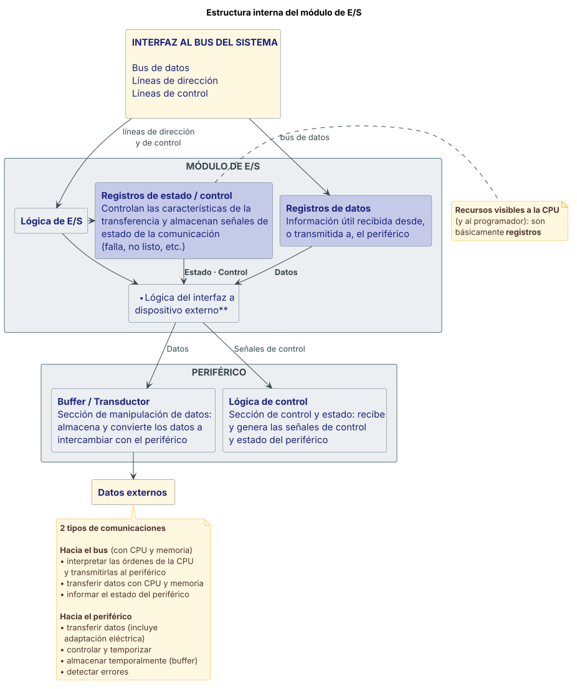
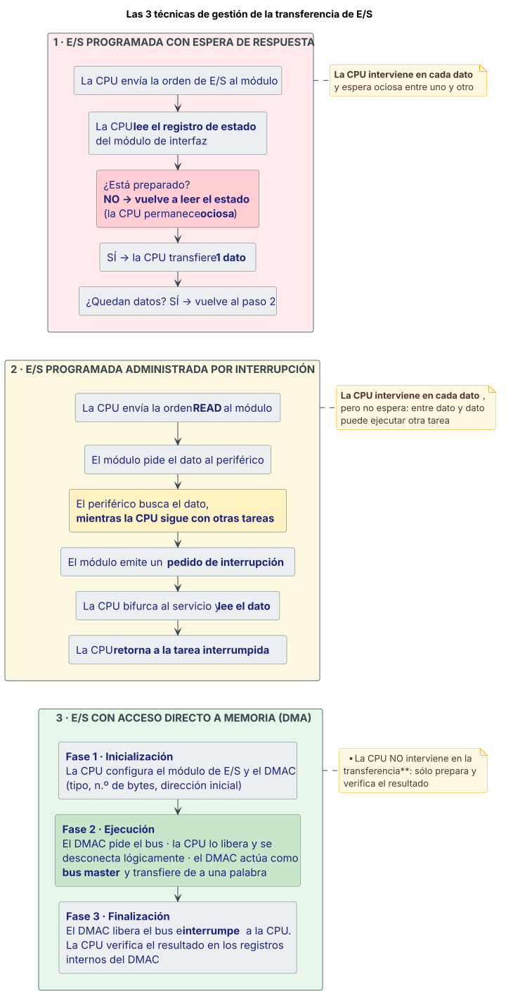

Entrada/Salida¶
Definición¶
En la primera clase del curso se presentó el modelo de arquitectura de von Neumann basado en 3 subsistemas: CPU, Memoria y E/S, vinculados por el bus de datos, el bus de direcciones y el bus de control.
El subsistema de E/S comprende los dispositivos que están conectados al bus del sistema y proveen los servicios de transferencia de datos con los periféricos.
Debido a la gran variedad de periféricos con los que se requiere intercambiar información, el subsistema de E/S tiene que ser lo suficientemente flexible para permitir:
- Transmisión de diferentes cantidades de datos.
- Rango de velocidades de transmisión muy amplio.
- Diferentes formatos de dato y tamaño de palabra.
En general, todos los periféricos son más lentos que la CPU y la memoria. Los dispositivos que forman parte del subsistema de E/S permiten descongestionar el trabajo de la CPU.
Tipos de periféricos más comunes:
| Categoría | Ejemplos |
|---|---|
| Comunicación hombre-máquina | monitor/pantalla, mouse, teclado |
| Almacenamiento | disco duro, CD, DVD |
| Impresión | impresora, escáner |
| Comunicación con dispositivos remotos | módem, placa de red |
| Multimedia | micrófono, parlantes |
| Automatización y control | sensores, alarmas, adquisición de datos |
Fuente: Teorías/03 Arq clase3 EntradaSalida.pdf, fil. 3–5.
Desarrollo¶
El módulo de E/S¶
Los módulos de interfaz de E/S son los dispositivos más sencillos para implementar las transferencias de E/S con periféricos. Los puertos de E/S conectan la interfaz entre el procesador/memoria y un periférico. Por lo común son administrados por el SO a través de drivers específicos.
La conexión con el periférico provee 2 tipos de información:
- Datos: información útil a transferir.
- Control y estado: información que permite realizar la transferencia, en lo posible libre de errores. Por ejemplo: sentido de la transferencia (entrada, salida), operación (lectura, escritura), estado del periférico (listo, no listo, en falla).
El módulo de E/S debe ejecutar 2 tipos de comunicaciones:
- Transferir datos con el periférico, incluida la adaptación eléctrica.
- Controlar y temporizar uno o más dispositivos externos.
- Almacenar temporalmente datos (buffer).
- Detectar errores.
- Interpretar las órdenes que recibe de la CPU y transmitirlas al periférico.
- Transferir datos con la CPU (registros) y la memoria.
- Informar a la CPU del estado del periférico.
Estructura interna del módulo de E/S¶
El esquema detallado tiene dos caras: la interfaz al bus del sistema y la interfaz a dispositivos externos, unidas por la lógica de E/S.
Hacia el sistema, los recursos "visibles" a la CPU (y al programador) son básicamente registros. Existen 2 tipos:
- Registros de datos: contienen la información útil recibida desde, o transmitida a, el periférico.
- Registros de control y estado: controlan las características de la transferencia y almacenan señales de estado de la comunicación (falla, no listo, etc.).
Del bus del sistema entran el bus de datos, las líneas de dirección y las líneas de control; del otro lado salen las líneas de datos, estado y control hacia el dispositivo externo, manejadas por la lógica del interfaz a dispositivo externo.
El periférico del otro lado¶
Un periférico tiene 2 bloques funcionales que manejan la comunicación con el módulo de E/S:
- Hacia el exterior del periférico:
- Sección de manipulación de datos (buffer / transductor): almacena y convierte los datos a intercambiar con el periférico.
- Sección de control y estado (lógica de control): recibe y genera las señales de control y estado del periférico.
- Hacia el módulo de E/S:
- Sección de manipulación de datos.
- Sección de manipulación de señales de control y de estado.
Tipos de puerto de E/S¶
Existen 2 tipos básicos: serie y paralelo.
| Paralelo | Serie | |
|---|---|---|
| Líneas de dato | Varias (n): transfiere n bits simultáneamente entre el puerto y el periférico | 1 línea de dato |
| Ejemplos | Impresora paralelo, scanner | Impresora serie, red Ethernet, mouse, teclado |
| Cableado | Requiere un cable que incluya al menos los n bits de datos → método bastante costoso | Cable sencillo. El costo es mucho menor |
| Velocidad | Transmite de a n bits simultáneamente | Los datos deben serializarse —1 bit por vez, uno a continuación del otro—, lo que en teoría sería mucho más lento |
Dispositivos de E/S más complejos¶
Las puertas de E/S son un tipo particular de dispositivo de E/S. Hay otros dispositivos más complejos que, además de la tarea básica de implementar la transferencia de datos, proveen otras prestaciones:
- Ocultar las propiedades particulares del dispositivo periférico a la CPU: temporizados, formatos, electromecanismos, etc.
- Manejar múltiples dispositivos simultáneamente.
- Controlar varias funciones del dispositivo.
Registros de un puerto de E/S¶
Desde el punto de vista de la CPU, una operación de E/S requiere acceder a los registros internos del módulo de interfaz de E/S. Los registros pueden ser de lectura y/o escritura, y hay 2 tipos:
- De DATOS: intervienen en la transferencia de entrada o de salida del dato a
intercambiar entre el sistema de cómputo y el periférico.
- Operación de entrada: lectura de un registro de dato de entrada —un registro escrito por el periférico y leído por la CPU—.
- Operación de salida: escritura de un registro de dato de salida —un registro escrito por la CPU y leído por el periférico—.
- De CONTROL y ESTADO: controlan y registran el funcionamiento del módulo, la
transferencia y el periférico.
- Control: adecuar la configuración del módulo para ajustar formatos, sincronizaciones, etc.
- Estado: registrar el estado operativo del módulo y del periférico.
Acceso al subsistema de E/S¶
Desde el punto de vista de la CPU, el subsistema de E/S está compuesto por un conjunto de registros a los que accede para una operación de entrada o de salida. Existen 2 técnicas de acceso a estos registros:
- Los registros de los dispositivos de E/S y la memoria comparten un único espacio de direcciones.
- Los registros de E/S se comportan idéntico a una memoria de lectura/escritura.
- No hay instrucciones específicas de E/S: se usan las mismas
instrucciones de movimiento de datos a memoria.
- Ej.:
MOV Reg_dato, AL, dondeReg_datoes la dirección de un registro de salida del módulo de E/S —dirección idéntica a la correspondiente a una posición de memoria—.
- Ej.:
- Los registros de E/S y la memoria están en diferentes espacios de direcciones.
- Dado que el bus de direcciones es compartido por la memoria y el subsistema de E/S, se requieren señales de control adicionales para identificar a dónde está accediendo la CPU: a la memoria o a la E/S.
- Hay instrucciones específicas de E/S, distintas de las de acceso a
memoria. Cuando se ejecutan, en el bus de control se identifica el acceso
al mapa de direcciones de E/S; para el resto de las instrucciones se
identifica el acceso a la memoria.
- Entrada:
IN dest, fuente—destes AL o AX (8 o 16 bits) yfuenteun número de 8 bits sin signo (0 a 255) o DX (0 a 65535). - Salida:
OUT dest, fuente—fuentees AL o AX (8 o 16 bits) ydestun número de 8 bits sin signo (0 a 255) o DX (0 a 65535).
- Entrada:
Gestión de la transferencia: las 3 técnicas¶
Desde el punto de vista de la gestión para transferir datos entre el sistema de cómputo y el periférico, existen 3 estrategias básicas de implementación:
- E/S programada y espera de respuesta
- E/S programada y administrada por interrupción
- E/S con acceso directo a memoria (DMA)
Las 2 primeras opciones requieren intervención directa de la CPU, es decir que la CPU participa en la transferencia de todos los datos (byte o word) a transferir.
1. E/S programada y espera de respuesta¶
La CPU interviene directamente en la transferencia de cada unidad de información (byte, word) con el módulo. Tiene control casi directo sobre la operación de E/S: comprueba el estado del dispositivo, envía los comandos requeridos —por ejemplo de lectura o escritura— y realiza la transferencia de todos los datos, de a uno.
En cada dato que es transferido, la CPU espera que el módulo de E/S termine la operación —típicamente que el periférico "acepte" el dato—. Durante la espera la CPU permanece ociosa (no deseable).
Secuencia de acciones que ejecuta la CPU:
- La CPU verifica el estado del periférico (preparado / no preparado) leyendo un registro del módulo de interfaz.
- Examina el estado del periférico chequeando el bit (o bits) que identifican dicho estado.
- Si el dispositivo no está listo (por ejemplo bit = 0), la CPU vuelve al paso 1. Este lazo significa que la CPU "espera" hasta que el periférico se pone en "preparado", es decir, listo para la transferencia.
- Cuando el dispositivo está listo, la CPU transfiere 1 dato hacia o desde el módulo de interfaz.
- Si hay más datos que transferir, vuelve al paso 1.
- Si se completó la transferencia, termina el servicio de E/S.
2. E/S programada y administrada por interrupción¶
La CPU sigue interviniendo directamente en la transferencia de cada unidad de información con el módulo. La diferencia: cada vez que el módulo está listo —o completó una transferencia— avisa a la CPU con un pedido de interrupción.
- La CPU no tiene que ejecutar el lazo de comprobación del estado del módulo (pasos 1, 2 y 3 de la técnica anterior). Sólo inicia la transferencia al recibir el pedido de interrupción del periférico.
- Durante el tiempo que el periférico no está listo, la CPU no tiene que esperar: puede seguir ejecutando otra tarea.
Secuencia para una transferencia de entrada de 1 dato (por ejemplo, 1 carácter):
- La CPU inicia la operación de lectura (entrada) enviando una orden de lectura
(
READ) al módulo de E/S. - El módulo de E/S solicita el dato al periférico.
- El periférico busca el dato, mientras la CPU continúa con sus tareas.
- Cuando el módulo de E/S tiene el dato enviado por el periférico, emite un pedido de interrupción a la CPU.
- La CPU detecta el pedido, interrumpe el proceso y bifurca al servicio de la interrupción.
- Durante la interrupción, la CPU lee el dato desde el módulo de E/S.
- La CPU retorna a la tarea interrumpida.
3. E/S con acceso directo a memoria (DMA)¶
Es la tercera técnica, en la que la CPU no interviene en la transferencia de cada dato.
:material-arrow-right-circle: Ver la ficha completa de DMA
Identificación de la fuente de interrupción en E/S¶
Cuando hay varios dispositivos periféricos, con esta forma de administración de las transferencias se requiere poder identificar la fuente de la interrupción. Existen varias estrategias distintas:
| # | Estrategia | Descripción |
|---|---|---|
| 1 | Diferentes líneas de interrupción | Una línea de interrupción por cada dispositivo. Es sencilla de implementar. Hay una limitación en la cantidad de dispositivos a conectar, debido a la cantidad restringida de señales de interrupción que puede manejar la CPU. |
| 2 | Una sola línea + encuesta por software | Se dispone de 1 sola línea para todos los dispositivos. Cuando ocurre el pedido, la CPU tiene que consultar a cada dispositivo —a cada módulo de E/S— para determinar quién fue el demandante. Este esquema de encuesta, también conocido como polling, puede resultar sumamente lento. |
| 3 | Una sola línea + conexión en cadena (daisy chain), tipo hard poll (encuesta por hardware) | Se dispone de 1 sola línea INTR para todos. La línea de respuesta de la CPU INTA (reconocimiento de interrupción) se conecta encadenadamente a todos los módulos —conexión tipo "margarita"—. Una vez enviada la confirmación de parte de la CPU, el módulo que está más adelante en la conexión (más próximo a la CPU) responde colocando en el bus un vector (palabra) que lo identifica. Si hay otros pedidos más abajo del que respondió, deberán esperar la terminación del servicio del que respondió. |
| 4 | Una sola línea + vectorizado | Se dispone de 1 sola línea INTR para todos. Un controlador dedicado (PIC) provee el vector que identifica la fuente de interrupción. Las líneas de interrupción tienen un orden de prioridad: las de más prioridad pueden interrumpir a las de menor prioridad. Si existe un maestro del bus, sólo él puede interrumpir. |
Relación con lo visto en la clase de interrupciones
La clase 2 presenta 3 opciones para identificar el origen del pedido (una línea por interrupción, polling por software, vectorizado por hardware). La clase 3, al aplicarlo a E/S, desdobla la identificación por hardware en daisy chain y vectorizado con PIC, quedando 4 estrategias. No es una contradicción: es el mismo esquema con más detalle. Ver interrupciones.
Niveles de transferencia de E/S¶
Las transferencias de E/S se pueden dividir, en función de la capacidad para interactuar con los periféricos, en varios niveles:
| Nivel | Composición | Participación de la CPU |
|---|---|---|
| 1 | CPU + módulo de interfaz de E/S o controlador | La CPU controla directamente los periféricos e interfaz, y administra la transferencia por programa (con espera) |
| 2 | CPU + módulo de interfaz de E/S o controlador con interrupción | La CPU controla directamente los periféricos y administra la transferencia con programa e interrupciones |
| 3 | DMA (DMAC + módulo de E/S) | La CPU no interviene directamente: sólo prepara y supervisa la transferencia |
| 4 | Canal de E/S básico (procesador básico + módulo de E/S) | La CPU interviene mínimamente |
| 5 | Canal de E/S inteligente (procesador inteligente + módulo de E/S) | La CPU no interviene, excepto en situaciones especiales |
Los niveles 4 y 5 —los canales de E/S— representan una extensión al concepto de DMA: ver la ficha de DMA.
Fuente: Teorías/03 Arq clase3 EntradaSalida.pdf, fil. 6–13, 14–16, 17–19, 20–23, 24–32, 59.
Diagrama¶
Estructura interna del módulo de E/S¶

Las 3 técnicas de gestión de la transferencia¶

Fuente: Teorías/03 Arq clase3 EntradaSalida.pdf, fil. 10–13 (módulo) y fil. 24–28, 44–52 (técnicas).
Ventajas y desventajas o comparaciones¶
E/S programada con espera vs. administrada por interrupción¶
| Con espera de respuesta | Administrada por interrupción | |
|---|---|---|
| ¿Interviene la CPU en cada dato? | Sí | Sí |
| Lazo de comprobación de estado | Sí: la CPU consulta hasta que el periférico se pone "preparado" | No: el módulo avisa con un pedido de interrupción |
| CPU mientras el periférico no está listo | Ociosa (no deseable) | Puede seguir ejecutando otra tarea |
| Eficiencia | Menor | Más eficiente |
En general: las operaciones de E/S administradas por interrupción son más eficientes que las programadas con espera, pero ambas técnicas requieren la intervención directa de la CPU. Al tener que intervenir la CPU en la transferencia de los datos se presentan 2 problemas:
- La velocidad de transferencia depende de la capacidad de la CPU de atender estas tareas. Aunque la CPU es muy rápida, puede ser que en determinadas circunstancias no sea capaz de administrar varias transferencias simultáneamente.
- La CPU puede permanecer ocupada mucho tiempo durante la operación, sin poder hacer otras tareas.
Además, si el volumen de datos a transferir es grande, el tiempo de ocupación de la CPU crece también.
Puerto serie vs. puerto paralelo¶
Ver la tabla en Tipos de puerto de E/S: el paralelo transfiere n bits simultáneamente pero es bastante costoso por el cableado; el serie requiere un cable sencillo, de costo mucho menor, a cambio de tener que serializar los datos.
E/S memory-mapped vs. espacio separado¶
| Memory-mapped | Espacio separado (Intel) | |
|---|---|---|
| Espacio de direcciones | Único, compartido con memoria | Diferentes espacios |
| Instrucciones | No hay específicas: las mismas de movimiento a memoria (MOV) |
Sí, específicas de E/S (IN, OUT) |
| Señales de control adicionales | No hace falta distinguir | Sí: el bus de direcciones es compartido, hay que identificar si el acceso es a memoria o a E/S |
| Comportamiento de los registros | Idéntico a una memoria de lectura/escritura | Un mapa de direcciones aparte |
Fuente: Teorías/03 Arq clase3 EntradaSalida.pdf, fil. 15–16, 20–23, 25–27, 33.
Ejemplo del curso¶
La teoría analiza el comportamiento de la CPU en transferencias de E/S en 2 casos: un periférico lento (impresora) y uno rápido (disco). Para ambos se compara espera de respuesta contra administrada por interrupción.
Datos de la CPU¶
- Reloj de 200 MHz → período del reloj = 5 ns.
- En promedio necesita 2 ciclos de reloj por instrucción; este parámetro se conoce como CPI, en este caso CPI = 2.
- Ciclo de instrucción = 2 × 5 ns = 10 ns = 10⁻⁸ s.
- N.º de instrucciones por segundo = 1 / 10⁻⁸ = 100 millones de instrucciones por segundo (100 MIPS).
Caso 1 — Transferencia a una impresora (periférico lento)¶
Imprimir (operación de salida) un archivo de 10 Kbytes en una impresora láser de 20 páginas por minuto. Estimando 1 página = 3.000 caracteres y 1 carácter = 1 byte:
- 20 ppm × 3.000 car/pág = 60.000 caracteres por minuto
- Vt = 60.000 car/min ÷ 60 s = 1.000 car/s = 1 Kbyte/s
a) Con espera de respuesta. La CPU entra en un bucle y envía un nuevo byte cada vez que la impresora está preparada para recibirlo. A 1 Kbyte/s, para 10 Kbytes:
Tiempo total de transferencia = 10 s. La CPU está ocupada con la operación de E/S durante 10 s. Como la velocidad de la CPU es de 100 MIPS, en ese tiempo podría haber ejecutado 1.000 millones de instrucciones.
b) Administrada con interrupciones. La impresora genera una interrupción cada vez que está preparada para recibir un nuevo byte. Si la gestión de la interrupción —que se llama ATI— requiere 10 instrucciones (entre las que se incluyen salvar contexto, comprobar estado, transferir byte, restaurar contexto y retornar):
Para transferir 10 Kbytes se requiere ejecutar 10.000 veces la ATI. Tiempo = 10.000 × 10 instr × 10⁻⁸ s = 10⁻³ s La CPU está ocupada con la operación de E/S durante 0,001 s.
Conclusiones del caso 1. La transferencia dura 10 segundos, porque es el tiempo que tarda la impresora en imprimir los 10.000 caracteres. Pero el tiempo de uso de la CPU es 10 s con espera contra 0,001 s por interrupción: la E/S por interrupciones reduce en 10.000 veces el tiempo que la CPU está ocupada gestionando la impresora, y por lo tanto es mucho más eficiente.
Caso 2 — Transferencia a un disco (periférico rápido)¶
Transferir un archivo de 10 Mbytes de memoria a disco. El disco posee una velocidad de transferencia de 10 MB/s (1 byte cada 10⁻⁷ s, o 100 ns) → tiempo total de transferencia = 1 segundo.
a) Con espera de respuesta.
Tiempo total de transferencia = 1 s para 10 Mbytes. La CPU está ocupada durante 1 s. A 100 MIPS, en ese tiempo podría haber ejecutado 100 millones de instrucciones.
b) Administrada con interrupciones. Con la misma ATI de 10 instrucciones:
Para transferir 10 Mbytes hay que ejecutar 10⁷ veces la ATI. Tiempo = 10⁷ × 10 instr × 10⁻⁸ s = 1 s. La CPU está ocupada durante 1 s.
Conclusiones del caso 2. La transferencia dura 1 segundo porque es lo que tarda el disco en transferir los 10 Mbytes. Pero ahora no hay diferencia entre las 2 técnicas: en ambas la CPU está ocupada 1 segundo, el 100 % del tiempo. Y si la velocidad del dispositivo fuera mayor, la CPU no podría hacerla.
Para qué sirve este ejemplo en el final
Con periféricos lentos, la E/S por interrupción es dramáticamente mejor que la espera. Con periféricos rápidos, las dos técnicas se igualan y saturan la CPU. Ése es el argumento con el que la teoría justifica la existencia del DMA.
Fuente: Teorías/03 Arq clase3 EntradaSalida.pdf, fil. 34–43.
El PIO y el protocolo Centronics (Práctica 2)¶
La Práctica 2 resuelta trabaja la E/S mediante consulta de estado sobre el simulador VonSim, con el PIO —puerto paralelo programable— y una impresora. El final no toma assembly, así que acá va sólo lo conceptual.
Registros del PIO¶
| Registro | Dirección | Rol |
|---|---|---|
| PA | 30h |
Puerto A — datos. En el dispositivo "Llaves y Luces", las llaves se conectan al puerto PA |
| PB | 31h |
Puerto B — datos. Las luces se conectan al puerto PB |
| CA | 32h |
Control del puerto A: configura cada bit como entrada o salida |
| CB | 33h |
Control del puerto B |
El patrón que se repite en todos los ejercicios: primero se escribe el registro
de control —0 para configurar el puerto como salida, 0FFh como entrada— y
después se lee (IN) o escribe (OUT) el registro de datos. Es exactamente
la distinción entre registros de control y registros de datos de la
teoría.
El protocolo Centronics¶
El protocolo Centronics sirve para indicarle a la impresora cuándo se está enviando un carácter a imprimir.
Usa 3 señales:
| Señal | Sentido | Función |
|---|---|---|
| data | Salida | El carácter a imprimir. Para simplificar, la línea de data se muestra directamente con el carácter a enviar; en la realidad data consta de 8 líneas de 1 bit que representan el código ASCII del carácter |
| strobe | Salida | Indica que hay un carácter para imprimir, mediante un flanco ascendente —cuando la señal cambia de 0 a 1— |
| busy | Entrada | Indica si la impresora está ocupada |
Secuencia para enviar un carácter:
- Esperar que la impresora esté libre (
busy = 0). - Poner el carácter en la señal de data.
- Indicar que hay un carácter para imprimir generando un flanco ascendente en strobe.
La impresora sólo imprime cuando está disponible (busy es 0) y recibe una señal de flanco ascendente en la línea de strobe. Si no se cumple alguna de estas condiciones, la impresora ignora la línea de data.
Las dos preguntas conceptuales del ejercicio
¿Por qué no se imprimen todos los caracteres de "holaa"? Sólo se imprime "oaa": la "h" no se imprime porque no se genera el flanco ascendente del strobe, y la "l" no se imprime porque la impresora está ocupada y no ve el flanco ascendente.
¿No alcanzaría sólo con busy? No. Cuando hay 2 o más letras iguales consecutivas —el caso de "aa"—, sin una señalización que le indique a la impresora que hay un nuevo valor, imprimiría sólo una vez ese valor y no se enteraría de que el siguiente debe imprimirse. Por eso hace falta el strobe.
Consulta de estado (polling) en concreto¶
El ejercicio del bit busy es la implementación literal de la
E/S programada con espera: en vez de
informar "Ocupada" y terminar, el programa entra en un lazo leyendo PA y
aislando el bit de busy, y sólo sale cuando vale 0. Ése es el "vuelve al paso
1" de la secuencia teórica.
Las prácticas usan VonSim, la teoría usa MSX88
Las teorías de cátedra (clase 2 y su anexo) están escritas sobre el simulador MSX88, mientras que las prácticas resueltas 2, 3 y 4 (AC24/AC25) usan VonSim y WinMIPS64. Las direcciones de los registros del PIC coinciden entre ambos, pero si un enunciado viejo menciona MSX88 y uno nuevo VonSim, están hablando del mismo modelo de máquina con distinta herramienta.
Fuente: Prácticas/Practica 2 - E_S - Resolución - AC25.pdf, p. 1–4.
Preguntas de final sobre este tema¶
:material-help-box: Ver el banco de preguntas de Entrada/Salida
Fuentes citadas¶
Teorías/03 Arq clase3 EntradaSalida.pdf— 65 filminas. Fuente primaria del tema.Prácticas/Practica 2 - E_S - Resolución - AC25.pdf— p. 1–4. Registros del PIO, protocolo Centronics (busy / strobe / data) y consulta de estado.
Referencias que da la propia cátedra (fil. 65): W. Stallings, 5.ª ed.,
capítulo 6; http://www.pcguide.com/ref/mbsys/res/irq/func.htm.